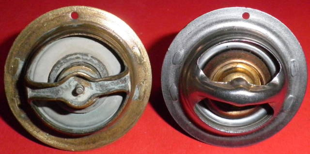

Alternative Thermostat
The dimensions of the OEM thermostat follow (in black). The nearest alternative thermostat found so far
is Tridon's TT2003-180 (in red). The problem with this thermostat is that it opens 7C hotter than it
should and is fully open 4C hotter. The Tornado, and all Benelli triples run at 95C, so this device, while
dimensionally correct is not really an alternative. It will work though. I have used it.
I had thought that it may be possible to install a lighter spring, which may allow it to open sooner, but
this might not be that easy to accomplish, since the parts are pressed together. Getting it apart would be
fine, but it would have to be welded back together. Not something the average handyman would find that easy.
A further search of Tridon's 44mm thermostat offerings revealed a TT342-165. '165' meaning the opening temperature in Farenheit, equivalent to 74C, bang on the money! It fits the rather obscure Cummins Diesel engines "eng. 210 Lineal 992-994", whatever that means! A further search revealed that it was for B series 4 & 6 cylinder -114 engines. I contacted Gates, and they didn't have an alternative, so it is a bit of an orphan, but available from Auto Surplus in Australia, amongst many others, for under AUD 50. They sell on ebay as well. The cost of the OEM part in Australia is just under AUD 100, and from Europe, EUR 35 plus shipping, so the TT342-165 is good value, although it needs modification to fit. It is a bypass thermostat which very nearly fits, but for the bypass valve so it has to go.
| Tridon TT342-165 | Fortunately the wax mechanism is tucked up behind the frame, so the tail can be cut off without damage. I cut the swaged end off first to remove the bypass valve and it's spring. Then I cut the tail off at the base. |
| Use the frame as a cut line to remove the tail | It now fits, but we're not done yet. |
|  | |
| The OEM part has a bleed hole and the TT342 doesn't. | So mark the position for 2.5 - 3 mm in from the edge and drill a 2 mm hole. There is an indent in the engine barrel that accommodates this hole. It's uppermost, so install the thermostat to suit. |
A Smarter Alternative Thermostat
A bit more involved but the thermostat can be remove completely. That will remove a flow restriction, but you'll need to replace the water pump as well with an electric pump and controller. Being electric, the controller can run it at various speeds dependant on temperature, including zero, when the "thermostat" is effectively closed. The plan would be:-
| Engine Temperature (C) | Pump Flow |
| < 75 | 0 |
| 75 - 95 | minimum - maximum |
| > 95 | maximum |